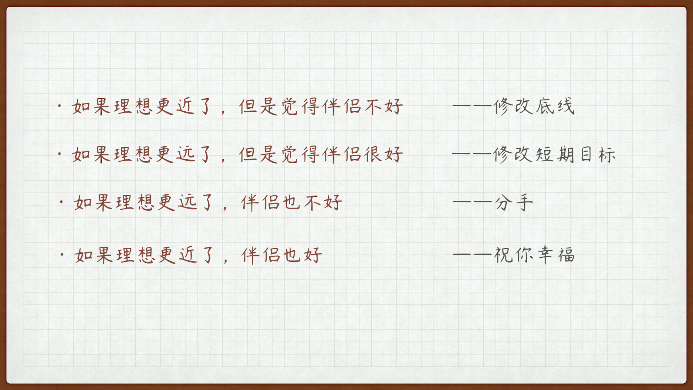

- 00 开篇词 爱与被爱，是人一生最值得学习的能力.md.html
- 01 是终点也是起点：你的恋爱目标是什么？.md.html
- 02 拒绝焦虑状态：TA到底爱我吗？.md.html
- 03｜冒犯有时是必要的：如何开启一段亲密关系？.md.html
- 04 亲密关系的本质是分享：如何把握暧昧的窗口期？.md.html
- 05 创造型与消费型活动：两个人在一起没事干怎么办？.md.html
- 06 小心看上去平平无奇的陷阱：如何防范高级渣？.md.html
- 07 无法回避的现实问题：“亲对象”也要明算账？.md.html
- 08 七年未必痒：如何营造亲密关系的新鲜感？.md.html
- 09 相亲与恋爱套路不一样：相亲有哪些需要注意的？.md.html
- 10 恋爱成功不是只有结婚一条路：分手是我错了吗？.md.html
- 11 独身主义也不赖：选择不结婚究竟是选择了什么？.md.html
- 12 姐弟恋也很可爱：姐弟恋有什么好处和注意事项？.md.html
- 13 千古难题真难办：如何跨越家庭背景的差异？.md.html
- 春节加餐1 公主，快放开那只巨龙！.md.html
- 春节加餐2 恋爱课答疑集锦：人潮之中彼此相视而窃喜.md.html
- 春节加餐3 恋爱课直播集锦：恋爱这件小事儿.md.html
- 结束语 但行好事，莫问前程.md.html
01 是终点也是起点：你的恋爱目标是什么？
今天是我们这堂恋爱课的第一讲，我想先和你聊聊“恋爱目标”这件事。
谈起目标，看似画饼充饥，可实际上，却是整个战略中最重要的一环。
正如每一个玩命复习的学生，目标大多是在考试中拿到理想分数；每一个玩命加班的打工人，目标大多是月底拿到更多薪水；每一个玩命忽悠你加班的资本家，目标都是先挣他一个亿。
但是，绝大多数玩命谈恋爱的人，投入了大量的时间、精力、金钱和情绪后，却自始至终都没搞懂自己的目标是什么，更说不出自己在一段恋爱中究竟想得到什么。
为什么要有恋爱目标？
也许你会说了，没有目标不行吗？人生这场旅途，不就是边走边看边观摩吗？还真不是。
之前，有一个妆容精致的 OL 小姐姐，当时，她来找我做情感咨询。这个点奶茶都恨不得给我做个 SWOT 分析的女生，跟我大讲她的每一段情感遭遇，问我为什么她的恋情总是失败？
本来气势汹汹的她，被我问到你的恋爱目标是什么时，像一个课堂上开小差被抓包的学生，犹豫了半天，思索了半天，最后试探性告诉我，不以结婚为目的的谈恋爱都是耍流氓？
你看，这个答案说出口，她自己都没底。爱情跟考试一样，没学就是不会，“三短一长选一长”纯粹是求个心理安慰。我为什么要先问她恋爱目标？恋爱目标真的很重要吗？
是的，方向不正确，越努力，越失败。我举个例子，在金庸武侠中，有一个叫杨过的人，即使你没看过《神雕侠侣》，我相信你也多多少少听说过他和小龙女的“恋爱事迹”。
其实除了小龙女之外，杨过这一生遇见了无数妹子，郭芙、陆无双、程瑛、完颜萍、耶律燕、公孙绿萼、郭襄等等。这些小姐姐，梅兰菊竹各有所长，有颜值高的、武功高的、性格温柔的、有文化的、家世好的，可是为什么都是一见杨过终身误，却没有一个能拿下杨过的？
因为，她们不符合杨过的恋爱目标。杨过自幼失怙，说是找对象，实际上都是在找母爱。
这些妹子看见杨过，都是杨大哥、杨大侠，都把他当朋友、当暗恋对象、当救星、当武林豪杰，都是平视甚至仰视杨过的。所以，靠传统江湖女侠撩汉那一套都不好使啊！管你英雄救美、霸道女侠、刁蛮公主、古灵精怪的，杨过全然不吃这一套，杨过谈恋爱就是要弥补家庭温暖的呀。
而小龙女呢？小龙女拿杨过当儿子养了好几年，又当爹、又当妈，又管生活，又管教育还管思想，一把屎一把尿把他拉扯大，所以杨过认准小龙女生死相许。
只有小龙女拿杨过当孩子，一见面就摸摸头，说过儿长大了。其中蕴含的真意，翻译过来大概就是：儿子，叫爸爸。也只有在小龙女这里，杨过才会扔下大侠包袱，翻跟头、耍无赖，回归他最喜欢的小孩状态。
所以神雕同人小说都喜欢拿黄蓉去配杨过，这还真是书糙理不糙。因为神雕出场的所有女性，有一个算一个，能跟小龙女争一下的只有黄蓉，因为她是唯二能让杨过感受到母爱的角色。
这就叫，目标不对，努力白费；目标搞对，一步到位。
什么是好的恋爱目标？
那么，什么是好的恋爱目标呢？这显然是一个没有标准答案的问题。
有人觉得理想的恋爱是琴瑟和谐、相敬如宾；
有人觉得恋爱是同生共死、轰轰烈烈到白头；
有人觉得非要天雷勾地火，看见对方就想“繁衍后代”才算真正恋爱；
有人觉得恋爱就是为了结婚，结婚了就算恋爱成功。
其实每一种都行，无所谓对错。这种只要你自己信就好的东西，我们统称为价值观。
就好比电影《姜子牙》里面说的，救一人还是救苍生。你爱救一人就救一人，你爱救苍生就救苍生，这种价值选择怎么样都不能称之为错。这个问题上，唯一可能出现的错误就是，打着救苍生的牌子害一人或者打着救一人的牌子害苍生——救谁都没有错，害人才有错。有人打着结婚的牌子骗人恋爱，或打恋爱的牌子骗人结婚——结婚和恋爱都没错，骗人才有错。
虽然，我们说，不同的人在不同的人生阶段，面对不同的恋爱对象，内心的恋爱目标也是不同的，我们无法给每个人确定一个一以贯之的目标。但是，我可以给你三条恋爱目标的原则。
第一条：再差的目标，也胜过没有目标。
当你有了一个恋爱目标，哪怕你定的不是特别准，你也可以在生活中慢慢修正。但是，就怕你毫无目标，始终在原地兜兜转转；有一个恋爱目标，哪怕定的特别高，你也可以在人海中慢慢寻找，就怕你一点头绪都没有，碰见对的人都不自知。
《天龙八部》中有一个叫虚竹的人物，他的恋爱目标就是找初恋，但是初恋叫啥名、长啥样，一概不知。你看，这个恋爱目标是不是差到不能再差了，无异于大海捞针，几乎不可能实现。
但就是抱着这样的目标，他在西夏招亲的时候，碰见了梦姑。这是不是像极了我们的现实生活，所以说，只要你目标明确，从不彷徨，人口基数这么大，你总能碰到你想找的那个人。
你可能想问了，那我就想找个好看的、有钱的行吗？当然可以。
你可以在恋爱中追求阶级跃升，找家庭条件最好的，也可以在恋爱中追求精神契合，找兴趣爱好最一致的；你希望在一段恋爱关系中得到生活的照顾，可以专找贤妻良母型为你洗衣做饭的；也可以在一段恋爱关系中想得到事业的支持，专找女强人型愿意陪你披荆斩棘的。
但你不能不知道自己到底要什么，也不能什么都想要。
其实，最痛苦的就是这种半吊子。半吊子们，既无法彻底坚持理想主义，搞纯粹的爱情，又无法彻底向功利主义低头，去做现实的奴隶，他们站在此岸望彼岸，两头不靠岸。
第二条：再好的目标，也得服从人生目标
恋爱是人生的一部分，不能孤立地评判爱情，好的感情应当是让人生变得更好，而不是相反。
最近有部大热的剧叫《沉默的真相》，不知道你有没有看过？剧中的主人公叫江阳，是一名检察官，本来有着大好前途，但为了查清一起因高官性侵女童引发的冤案，也为了给山村支教同学侯贵平一个清白，付出了无数代价甚至身陷囹圄。
当然，在这个专栏里，我们要分析的不是江阳的正义感。我要讲的是，我当时在看剧时，观察到的剧中的一些情节，也就是江阳的爱情，虽然着墨不多，但也值得分析。
江阳的初恋是市副检察长的千金吴爱可，但是，最终他选择了和一名纺织厂女工郭红霞结婚。论出身、论颜值、论学历、论工作，吴爱可都是秒杀郭红霞的存在。那为什么江阳不选吴爱可呢？
因为，再好的恋爱目标，也要服从于人生目标。
江阳自从介入这个案件后，人生目标就是一件事——求个公道。吴爱可也很愿意求公道，但求公道的前提是她那个副检查长老爹能摆得平，当她发现对方势力过于强大可能伤及自身的时候，吴爱可就怂了，这就是我们经常能遇到的，精致的理想主义者。
相反，郭红霞出场不多，寥寥几笔我们就能发现，这个女人不是英雄江阳背后的女人，而是英雄本雄。无论顺境逆境、贫穷富贵，始终无怨无悔支持丈夫追查案件真相，可谓坚定执着、深明大义。我想作者将其命名为郭红霞的时候，必然脑海里也闪现过郭靖郭巨侠那平凡又伟大的母亲。
如果说，江阳是跃向空中划开乌云的追光者，一心只为求公道、求得人间正义，那么，红霞就是替他承受现实引力的守护人，志同道合、一体两面。
爱情就是一场自我修炼，找对象其实也是在找寻自我。
第三条：恋爱目标，要以我为主
所谓的以我为主，就是恋爱目标的制定，决定因素应当在自己而不是在他人。当你把目标从取悦他人转到取悦自己上来，你会发现恋爱将变得前所未有的简单，也前所未有的充满意义。
我曾经做情感咨询的时候，遇到过一个男生，他自嘲自己是标准的舔狗。每天给人发几十条消息却收不到几条回复，逢年过节就绞尽脑汁给人送礼物，却频频被拒收，只有在人家失恋空窗期的时候，他才能捞着几次约会机会。
他自我感觉状态很差，却又欲罢不能。姑娘对他的拒绝和冷漠让他十分痛苦，但偶尔的联系却又让他激动不已，见一次面就像打了兴奋剂，充能好几天。
我帮他分析，他之所以处于这种状态，未必是他真有多喜欢那个姑娘，更多是他沉浸于自己设定的游戏，只是想赢而已。偏偏这场游戏还不受他自己控制，纯 AI 代打，输赢皆在人家一念之间。
与其用尽心机、想尽办法让别人过得更好，不如让自己过得更好。当他下定决心斩断这段关系，开始尽力过好自己生活后没几个月，这个姑娘居然开始主动联系他，约他出去吃饭看电影了。
所以，尽管恋爱目标没有标准答案，但我都推荐你将这条作为自己的恋爱目标之一。
那就是通过一段感情，变成更好的自己，这不是鸡汤。
这个好，可以是事业的提升，我努力升职加薪，当上 CEO，就是为了迎娶白富美，走上人生巅峰，这当然没有问题；这个好，也可以是视野的开阔，为了一个人，去到了从未踏足的地方，见到了从未看过的风景，吃到了从未尝试的美食，多了以前想象不到的人生体验，这非常美好。
这个好，还可以是情感能力的提升，学会了如何爱一个人，也学会了如何享受被爱，明白了如何在习惯的生活中接纳一段亲密关系，这都是宝贵的财富。只有当你把恋爱的出发点和落脚点转回到自己身上时，你才会发现很多困扰自己的问题，都不再是问题。
如何找到自己的恋爱目标？
现在，你应该对恋爱目标有一个新的认知了，那么，怎样才能找到自己的恋爱目标呢？我给你提供了一个简单的“目标三步走”小方法，你可以试一试。
Step1：在任意一个空闲的晚上，在一张纸上列出下面的内容：
你希望在一段感情中得到什么？
你绝对不能妥协牺牲的底线是什么？
这两点，每一点分别写五条，然后再划掉两条，这是一个不断权衡的过程。
Step2：在纸的另一侧，列出你人生的理想和中期、短期规划目标。
Step3：当你进入一段感情后（包括在追求期），每隔一段时间，你就拿出这个恋爱目标单进行迭代。如果你处于一段感情很久了，你也可以用这个方法，写下这段感情的目标。
当你觉得距离人生理想更接近了，就修改底线；
当你觉得距离人生理想更遥远了，就修改目标；
当你觉得这段感情偏离四个以上的恋爱目标，就认真考虑脱离这段感情。
示意图

这个方法也许不会帮你确定一个完美的目标，但是一定会让你在这个过程中，有所收获。有的时候，在情感问题上，万有引力那个公式不重要，那个砸中牛顿的苹果才重要。
爱情锦囊
恋爱目标不仅是目标，更是你寻找恋爱对象的标准，是你划定一段恋爱关系空间的依据，是做一切恋爱决策的基础，更是你认清自我的过程。
恋爱目标是个战略问题，市面上那些教你约会的方法，告白的方法，哄女朋友开心的等等具体方法都是战术问题，不解决战略问题，战术问题只会按住葫芦起了瓢。
所以，恋爱问题千变万化，但万变不离其宗。目标不对，努力白费；目标搞对，一步到位。
今天我们讲了三条确定恋爱目标的原则，一是再差的目标，也胜过没有目标；二是恋爱的目标，要服从人生的目标；三是恋爱目标，要以我为主。
丧失自我的恋爱关系，走到一起也是失败；帮你找到自我的恋爱关系，分手了也是成功。
“贵以身为天下，若可寄天下，爱以身为天下，若可托天下”。以我为主，不仅是恋爱的智慧，更是人生的智慧。
思考题
回忆你的感情经历，或者是展望你的未来，思考一下，你的恋爱目标是什么？有没有发生过变化？你的恋爱目标，是否符合这一讲所说的三个原则呢？
欢迎在留言区和我讨论、交流你的想法和见解，也可以留下你在婚恋上的困惑。
我会第一时间给你回复，期待你在爱情上的蜕变和成长。
感谢你的阅读，如果你的身边有不清楚恋爱目标的朋友，记得把这一讲分享给 Ta。